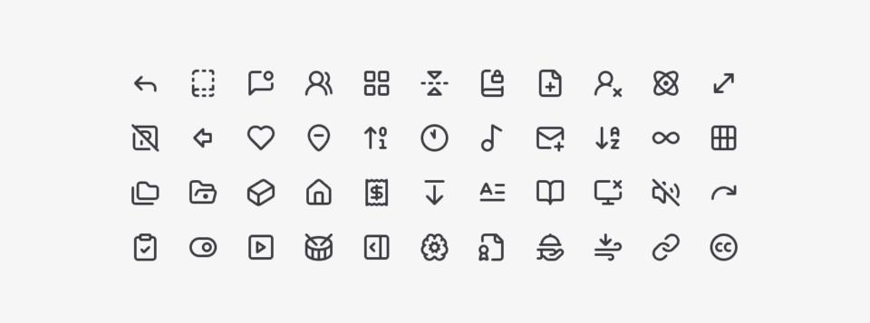
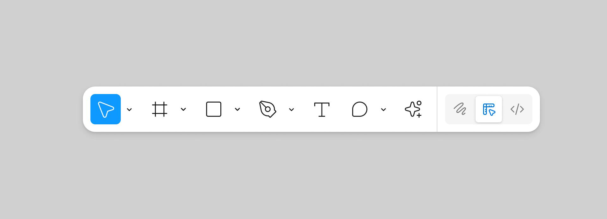
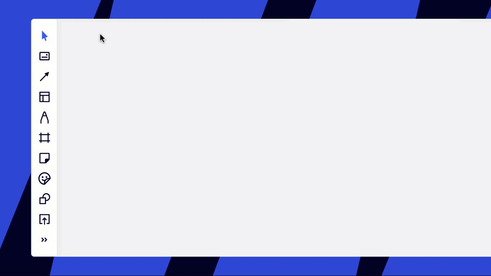
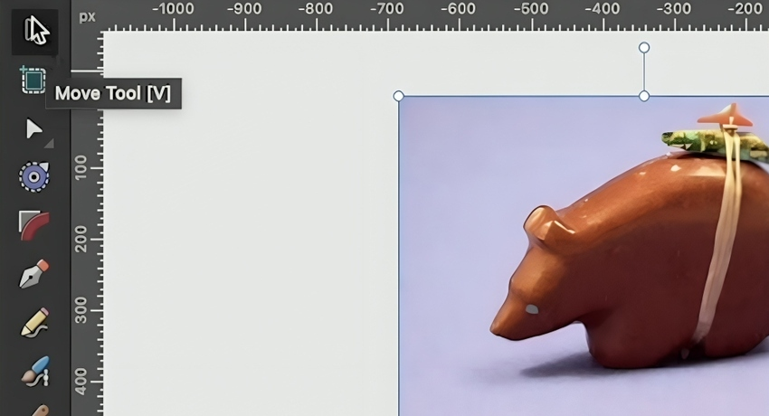

图标体系大盘与风格方向
一、五套系统现状
规模为本次扫描去重计数；字形列展示各族的视觉重量差异。
A · Material 实心
直连 26 + 桥接约 90 ｜ 码点登记 108
可变字体字形 + 部分 fill SVG mask；圆角、实心、视觉重量统一。通用控件、按钮、面板操作的主族。
主体合规，缺口在少数未登记名。
B · Plotcraft 线性
77 枚 ｜ 自绘 path ｜ 24 视窗 / 1.5px
家具、结构、道具等领域图形；文件注释已写明「域内线性语言，标准界面用 Material 实心」。
边界被突破：少数通用控件误用了这里的图形。
C · lucide 线性
53 枚 ｜ lucide-react 1.48 ｜ 线性
户外规划画布的形状/编辑/动作图标；另有少量面板控件（Check、X、Search、QrCode 等）也取自这套。
与 B 是两套并存的线性族，描边宽不一。
D · IconPark 镜片
3 枚 ｜ 组件内硬编码 path
搜索 / 放大 / 缩小；实心镜片 + 白色负形。码点表外，走组件内特例渲染。
规范登记的例外族；本地已有 Material zoom_in/out 备选。
E · 零散自绘
约 8 枚 ｜ 描边 1.35–2px 不等
抓手、四向移动、网格、相机×2、三立方簇、平面视图、罗盘、手机四宫格；描边宽与收框各自为政。
应逐枚归位到 A 或登记为例外。
二、全量清单（按场景逐枚）
判定：合规归 A 应归 A（误用） 域内保留 缺口待补 例外登记
| 场景 / 概念 | 当前实现 | 归属 | 去向与说明 |
|---|---|---|---|
| 左轨导航（64 宽竖轨） | |||
| 空间 | GridView → grid_view | A | 合规。26 档可在二期降到 20/24，族不动。 |
| 物料 | Boxes → inventory_2 | A | 合规。 |
| 拍摄场地（相机 + 3D 副标） | E 自绘描边相机 stroke 1.6 / 26 | E→A | 归 A 的 photo_camera；「3D」副标为文字不改。 |
| 户外规划 | Globe → public | A | 合规。 |
| 手机四宫格入口 | E 自绘 fill 四格 18 | E→A | 可归 A grid_3x3；若保留品牌四格构形，列入例外登记。 |
| 手机拍摄入口 | E 自绘描边相机 16 | E→A | 归 A photo_camera，与上一枚相机统一。 |
| 空间簇徽标（SpaceIcon） | E 三立方簇 stroke 1.35 | 例外 | 品牌/品类徽标图形，非操作按钮；保留但纳入例外清单，描边宽与域族对齐。 |
| 右轨工具（44 宽竖轨 · 钮 30 暂不动） | |||
| 分享 / 交付 | ios_share | A | 合规。与弹层内重复的上传箭头收敛为单入口。 |
| 移动场景 | E MoveSceneIcon 四向 | E→A | 归 A open_with；缺口 fill SVG 需补一枚。 |
| 抓手 / 平移 | E HandStopIcon 直手 | E→A | 归 A pan_tool；缺口 码点与 fill 均缺，需补登记。 |
| 选择 | near_me + Check check | A | 合规。 |
| 平面 / 立体切换 | view_compact · view_in_ar | A | 合规。 |
| 测量 | straighten | A | 合规。 |
| 标注 / 批注 | edit_note | A | 合规。 |
| 属性 / 选择集 | tune | A | 合规。 |
| 图层 | layers | A | 合规。 |
| 漫游 | footprint | A | 合规。 |
| 网格吸附 | E GridSnapIcon 井字 | E→A | 归 A grid_3x3；开启态去掉图标内落点块。 |
| 地图 / 卫星 | map · satellite | A | 合规。 |
| 撤销 / 重做 | undo · redo | A | 合规。 |
| 缩放 +/- | D iconpark_zoom_in/out_solid | D 例外 | 可收编回 A zoom_in / zoom_out（本地码点 + fill 已齐）；保留镜片亦为可接受例外。 |
| 导出 / 图库 | photo_camera · photo_library | A | 合规；两个入口的层级关系需在二期收敛。 |
| 氛围 / 天气 / 光线 | sunny · groups · rainy · light_mode · wb_sunny | A | 合规。 |
| 交付 / 氛围弹层 | |||
| 交付主钮 | ios_share | A | 合规，独立一枚主入口。 |
| 发布 | Upload → upload · 15 | A | 族合规；行内档 14/15 混用，统一收 16。 |
| 复制 | Copy → content_copy · 15/14 | A | 族合规；档位统一收 16。 |
| 打开 / 外部链接 | ExternalLink → open_in_new | A | 合规。 |
| 发评审 / 链接 | Link2 → link | A | 合规。 |
| 导出交接 | FileDown → file_save | A | 合规。 |
| 二维码 | QrCode → qr_code_2 · 26 | A | 合规。 |
| 重新生成 | refresh | A | 合规。 |
| 生成 3D | view_in_ar | A | 合规。 |
三、面板操作 · 户外画布 · 物料域
桥接族按用途分组列代表枚；完整映射见 solid-icons.tsx。
| 分组 | 代表图标（桥接 → Material 名） | 归属 | 去向 |
|---|---|---|---|
| 面板操作（solid-icons 桥接，全部落 A 族） | |||
| 导航 / 箭头 | arrow_back · arrow_forward · arrow_upward · north_east · swap_horiz · swap_vert(缺) | A | 缺口 swap_vert 未登记；其余合规。 |
| 动作 / 编辑 | add · remove · check · close · copy(content_copy) · download · upload · file_save · attach_file · link · open_in_new · delete · refresh · replay · autorenew · edit · edit_note · draw · tune · straighten · palette · text_fields | A | 族内合规；行内图标档统一 16。 |
| 视图 / 窗口 | fullscreen · fullscreen_exit · crop_square · select_all · visibility · center_focus_strong · left_panel_close · dashboard_customize · grid_view · grid_on | A | 合规。 |
| 身份 / 社群 | person · person_add · group · groups · verified_user · workspace_premium · key · lock · lock_open · lock_person | A | 合规。 |
| 反馈 / 状态 | info · help · warning · schedule · timer · star · sell · inbox · assignment · assignment_turned_in · chat · add_comment · progress_activity | A | 合规；旋转态 Loader2 已桥到 progress_activity。 |
| 户外规划画布（lucide-react 53 枚） | |||
| 画布域操作 | shapes · hexagon · square · circle · triangle · box-select · lasso · move · pen-tool · ruler · sticky-note · layers · layout-grid · list · route · tent · truck · hand · plus · minus · copy · undo-2 · redo-2 · rotate-cw · download · x · lock · lock-open · door-open · map-pin · user-plus · users · 8 枚 align-* | C 域内 | 属画布域图形，可保留线性；但应与 B Plotcraft 二选一收编为一套线性族，描边宽、圆角、视窗对齐。 |
| 面板混入的控件 | Check · X · Search · QrCode · Info · Copy · Download · Maximize2 · ScanLine · ReceiptText · Loader2 | C→A | 这些是通用控件，应归 A 族对应 check · close · search · qr_code_2 · info · content_copy · download · fullscreen · document_scanner · assignment · progress_activity。 |
| 物料域图标（Plotcraft 77 枚） | |||
| 家具 / 结构 / 道具 | chair · armchair · sofa · bench · table · desk · bed · dresser · wardrobe · bookshelf · cabinet · stove · fridge · sink · toilet · bath · shower · tv · computer · router · wifi · plant · painting · mirror · rug · vase · tree · fence · pool · door · window · stairs · wall · roof · floor … | B 域内 | 物料瓷砖、悬停提示、品类标记的领域图形，保留线性；与 C 合并为同一域族规范。 |
| 被误用的通用控件 | close · home · panels · unlock · copy · ruler · brick · live · demolish · target · eye · tag · warn | B→A | 出现在 viewport / chip / lot-badge / placement-hint / status-toast / view-options 等通用控件里，应归 A，不再借域族图形。 |
| 地图句柄 / 状态 | |||
| 罗盘双针 | E 自绘蓝灰双针 · viewBox 20×28 | 例外 | 地理指北图形，保留；登记为例外，不与工具族混排。 |
| 底图字符钮 | 地图字符 / 底图簇 | A | 句柄内小钮归 A map / layers；卡片底色与发丝线按地图控件规范。 |
四、待补登记 / 缺口清单
这些名字在码点表、fill SVG、loupe 特例三处都未命中，运行时会回退为空白或走字体兜底，需补码点、补 fill 或换已登记名。
| 图标名 | 出现位置 | 处理建议 |
|---|---|---|
| fact_check | 面板状态 | 补登记码点 + fill，或换 assignment_turned_in。 |
| share | 分享/外链 | 换 ios_share 或 open_in_new，避免与已用名歧义。 |
| view_agenda | 列表视图 | 换 dashboard_customize / menu_book，或补登记。 |
| 3d_rotation | 3D 入口 | 换 view_in_ar；若保留构形，补登记。 |
| swap_vert | ArrowUpDown 桥接 | 补登记，或换 swap_horiz 同类名。 |
| open_with | 四向移动 | 码点在表、fill SVG 缺；补一枚 fill 资产。 |
| pan_tool | 抓手平移 | 码点与 fill 双缺；二选一：补进字体子集 + fill，或沿用自绘 E 并登记例外。 |
五、三种风格方向（对照成熟案例）
样张为示意构形，非最终字形；每案列出代价与适配度，可在浏览器内横向比较。
案 1 · 实心一统
UI + 域图形全部翻 Material 实心- 参照：Figma 深色工具条、Google Maps 控件、Material 主族。
- 族最纯，按钮重量与选中态最统一。
- 代价：77 枚家具/结构域图形要重绘成实心，小尺寸下家具辨识度下降。
案 2 · 双轨分级（推荐）
控件实心 Material ｜ 域图形一套线性- 参照：tldraw / Miro / Mapbox —— 操作钮一套，画布与物料图形另一套。
- 与代码注释已写明的分工一致，只做收口不换族。
- 代价：把 Plotcraft 与 lucide 两套线性收敛成一套，对齐描边宽与视窗。
案 3 · 全线性一族到底
UI 也换 Lucide / Tabler 线性族- 参照：白板类轻量产品、Lucide/Tabler/Phosphor 图标库。
- 域与 UI 同形，跨族观感最轻。
- 代价：弃用现有 Material 字体子集与 108 枚码点，迁移量大；实心选中态需另立规则。





六、推荐口径（若走案 2）
待拍板：① 线性族收编选 Plotcraft 还是 lucide 为主；② pan_tool / open_with 是补 Material 资产还是沿用自绘例外；③ 缩放镜片是否收回 Material zoom_in/out；④ 左轨 26 档是否二期降到 20/24；⑤ 两套线性族合并的排期。